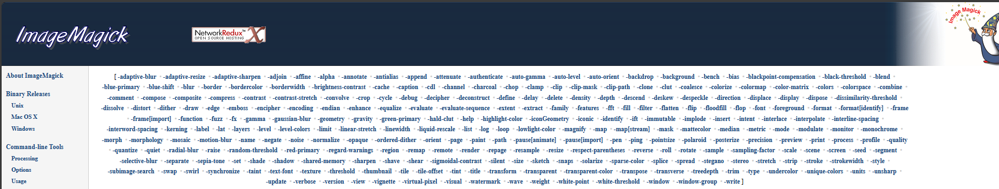

Все опции команды ImageMagick
news
terminal
imagemagick
Я здесь приложу перевод опций ImageMagick, нашел уже давно. Пригодилось.
Все опции ImageMagick есть на сайте(на английском):
- http://www.bibliotecacpa.org.ar/greenstone/bin/linux/imagemagick/share/doc/ImageMagick-6.6.5/www/command-line-options.html#implode

Так же есть неплохое руководство здесь(на русском):
- https://zalinux.ru/?p=7544#imagemagick_add_text_1
Все опции команды magick
Использование:
- magick [ВХОДНЫЕ-ОПЦИИ] ВХОДНОЙ ФАЙЛ [ВЫХОДНЫЕ-ОПЦИИ] ВЫХОДНОЙ ФАЙЛ
Настройки изображения:
-adjoin объединить изображения в один файл с несколькими изображениями
-affine matrix матрица аффинного преобразования
-antialias удалить пиксель-алиасинг
-authenticate ПАРОЛЬ расшифровать изображение с этим паролем
-background ЦВЕТ фоновый цвет
-bias ЗНАЧЕНИЕ добавить смещение при свёртывании изображения
-black-point-compensation использовать компенсацию черной точки
-blue-primary ТОЧКА chromaticity синяя основная точка
-bordercolor ЦВЕТ цвет границы
-caption СТРОКА добавить подпись к изображению
-cdl ИМЯ ФАЙЛА коррекция цвета со списком цветовых решений
-colors ЗНАЧЕНИЕ предпочтительное количество цветов в изображении
-colorspace ТИП альтернативное цветовое пространство изображения
-comment СТРОКА аннотировать изображение комментарием
-compose ОПЕРАТОР установить составной оператор изображения
-compress ТИП тип сжатия пикселей при записи изображения
-decipher ИМЯ ФАЙЛА зашифрованные пиксели magick в простые пиксели
-define ФОРМАТ:ОПЦИЯ определить один или несколько параметров формата изображения
-delay САНТИСЕКУНДЫ отображать следующее изображение после паузы
-density ГЕОМЕТРИЯ горизонтальная и вертикальная плотность изображения
-depth ЗНАЧЕНИЕ глубина цвета изображения
-direction ТИП отображать текст справа налево или слева направо
-display СЕРВЕР получить изображение или шрифт с этого X-сервера
-dispose МЕТОД метод удаления слоя
-dither МЕТОД применить диффузию ошибок к изображению
-encipher ИМЯ ФАЙЛА простые пиксели magick в зашифрованные пиксели
-encoding ТИП кодировка текста
-endian ТИП порядок байтов (MSB или LSB) изображения
-family ИМЯ отображать текст с помощью этого семейства шрифтов
-filter ТИП использовать этот фильтр при изменении размера изображения
-flatten сгладить последовательность изображений
-font ИМЯ визуализировать текст с этим шрифтом
-format "СТРОКА" характеристики форматированного выходного изображения
-fuzz ДИСТАНЦИЯ цвета в пределах этого расстояния считаются одинаковыми
-gravity ТИП горизонтальное и вертикальное размещение текста
-green-primary ТОЧКА chromaticity зелёная первичная точка
-intent ТИП тип цели рендеринга при управлении цветом изображени`
-interlace ТИП тип схемы чересстрочной развёртки изображения
-interpolate МЕТОД метод интерполяции цвета пикселей
-kerning ЗНАЧЕНИЕ устанавливает пробел между двумя буквами
-label СТРОКА назначить метку для изображения
-limit ТИП ЗНАЧЕНИЕ ограничение ресурсов кэша пикселей
-loop ПОВТОРЕНИЯ добавить расширение Netscape loop к вашей анимации GIF
-mask ИМЯ ФАЙЛА связать маску с изображением
-matte сохранить матовый канал, если он есть на изображении
-monitor следить за прогрессом
-orient ТИП ориентация изображения
-origin ГЕОМЕТРИЯ источник изображения
-page ГЕОМЕТРИЯ размер и расположение холста изображения (настройка)
-ping эффективно определять атрибуты изображения
-pointsize ЗНАЧЕНИЕ размер шрифта в пунктах
-preview ТИП тип изображения предварительного просмотра
-quality ЗНАЧЕНИЕ уровень сжатия JPEG/MIFF/PNG
-quiet подавить все предупреждающие сообщения
-red-primary ТОЧКА chromaticity красная основная точка
-regard-warnings обращать внимание на предупреждающие сообщения
-repage ГЕОМЕТРИЯ размер и расположение холста изображения
-sampling-factor ГЕОМЕТРИЯ горизонтальный и вертикальный коэффициент выборки
-scene ЗНАЧЕНИЕ номер сцены изображения
-seed ЗНАЧЕНИЕ создать новую последовательность псевдослучайных чисел
-size ГЕОМЕТРИЯ ширина и высота изображения
-statistic ТИП ГЕОМЕТРИЯ заменить каждый пиксель соответствующей статистикой из соседства
-stretch ТИП визуализировать текст с этим растянутым шрифтом
-stroke ЦВЕТ цвет штриха графического примитива
-strokewidth ЗНАЧ. ширина штриха графического примитива
-style ТИП отображать текст с этим стилем шрифта
-support ФАКТОР поддержка изменения размера: > 1.0 размыто, < 1.0 резко
-synchronize синхронизировать изображение с устройством хранения
-taint объявить изображение измененным
-texture ИМЯ ФАЙЛА имя текстуры для наложения на фон изображения
-tile-offset ГЕОМЕТРИЯ смещение плитки
-treedepth ЗНАЧЕНИЕ глубина дерева цвета
-transparent-color ЦВЕТ прозрачный цвет
-undercolor ЦВЕТ цвет ограничивающей рамки аннотации
-units ТИП единицы разрешения изображения
-verbose распечатать подробную информацию об изображении
-view трансформации просмотра FlashPix
-virtual-pixel МЕТОД метод доступа к виртуальному пикселю
-weight ТИП отображать текст с этим типом шрифта
-white-point ТОЧКА chromaticity белая точкаОператоры изображения:
-adaptive-blur ГЕОМЕТРИЯ адаптивное размытие пикселей; уменьшить эффект вблизи краев
-adaptive-resize ГЕОМЕТРИЯ адаптивно изменять размер изображения с помощью триангуляции, зависящей от данных
-adaptive-sharpen ГЕОМЕТРИЯ адаптивная резкость пикселей; эффект увеличения вблизи краёв
-annotate ГЕОМЕТРИЯ ТЕКСТ аннотировать изображение текстом
-auto-orient автоматически ориентировать изображение
-bilateral-blur ГЕОМЕТРИЯ нелинейный сглаживающий фильтр с сохранением границ и шумоподавлением
-black-threshold ВЕЛИЧИНА заставить все пиксели ниже порога стать черными
-border ГЕОМЕТРИЯ окружить изображение цветной рамкой
-channel МАСКА установить маску канала изображения
-charcoal РАДИУС имитировать рисунок углем
-chop ГЕОМЕТРИЯ удалить пиксели из внутренней части изображения
-clip обрезать по первому пути из профиля 8BIM
-clip-mask ИМЯ ФАЙЛА связать маску обрезки с изображением
-clip-path ИДЕНТИФИКАТОР обрезать по именованному пути из профиля 8BIM
-colorize ЗНАЧЕНИЕ раскрасить изображение цветом заливки
-color-matrix МАТРИЦА применить цветокоррекцию к изображению
-contrast увеличить или уменьшить контрастность изображения
-contrast-stretch ГЕОМЕТРИЯ улучшить контраст, «растянув» диапазон интенсивности
-convolve КОЭФФИЦИЕНТЫ применить ядро свёртки к изображению
-cycle КОЛИЧЕСТВО определяет количество позиций, на которое сдвигается каждая запись палитры
-despeckle уменьшить пятнышки на изображении
-draw СТРОКА аннотировать изображение графическим примитивом
-edge РАДИУС применить фильтр для обнаружения краев на изображении
-emboss РАДИУС тиснение изображения
-enhance применить цифровой фильтр для улучшения шумного изображения
-equalize выполнить выравнивание гистограммы изображения
-evaluate ОПЕРАТОР ЗНАЧЕНИЕ вычислить арифметическое, реляционное или логическое выражение
-extent ГЕОМЕТРИЯ установить размер изображения
-extract ГЕОМЕТРИЯ извлечь область из изображения
-fft реализует дискретное преобразование Фурье, discrete Fourier transform (DFT)
-flip перевернуть изображение по вертикали
-floodfill ГЕОМЕТРИЯ ЦВЕТ залить изображение цветом
-flop перевернуть изображение по горизонтали
-function ИМЯ применить функцию к изображению
-gamma ВЕЛИЧИНА уровень гамма-коррекции
-gaussian-blur ГЕОМЕТРИЯ уменьшить шум изображения и уменьшить уровень детализации
-geometry ГЕОМЕТРИЯ предпочтительный размер или расположение изображения
-identify определить формат и характеристики изображения
-ift реализует обратное дискретное преобразование Фурье, discrete Fourier transform (DFT)
-integral вычислить сумму значений (значений пикселей) в изображении
-lat ГЕОМЕТРИЯ локальное адаптивное пороговое значение
-layers МЕТОД оптимизировать или сравнить слои изображения
-level ЗНАЧЕНИЕ настроить уровень контрастности изображения
-linear-stretch ГЕОМЕТРИЯ` улучшить контраст, «растянув с насыщением» диапазон интенсивности
-median ГЕОМЕТРИЯ применить медианный фильтр к изображению
-mode ГЕОМЕТРИЯ сделать каждый пиксель «преобладающим цветом» соседства
-modulate ЗНАЧЕНИЕ изменять яркость, насыщенность и оттенок
-monochrome преобразовать изображение в чёрно-белое
-morphology МЕТОД ЯДРО применить метод морфологии к изображению
-motion-blur ГЕОМЕТРИЯ имитировать размытие движения
-negate заменить каждый пиксель его дополнительным цветом
-noise ГЕОМЕТРИЯ добавить или уменьшить шум на изображении
-normalize преобразовать изображение, чтобы охватить весь диапазон цветов
-opaque ЦВЕТ изменить этот цвет на цвет заливки
-ordered-dither NxN добавить к изображению шаблон шума с определённой амплитудой
-paint РАДИУС имитировать картину маслом
-polaroid УГОЛ имитировать фото Polaroid
-posterize УРОВНИ уменьшить изображение до ограниченного числа цветовых уровней
-print СТРОКА интерпретировать строку и вывести на консоль
-profile ИМЯ ФАЙЛА добавить, удалить или применить профиль изображения
-quantize ЦВЕТОВОЕ ПРОСТРАНСТВО уменьшить количество цветов в этом цветовом пространстве
-radial-blur УГОЛ радиальное размытие изображения
-raise ЗНАЧЕНИЕ осветлить/затемнить края изображения для создания 3D-эффекта
-random-threshold НИЗ,ВЕРХ случайное пороговое изображение
-range-threshold ЗНАЧЕНИЯ выполнять жёсткую или мягкую пороговую обработку в пределах некоторого диапазона значени изображения
-region ГЕОМЕТРИЯ применить параметры к части изображения
-render визуализировать векторную графику
-resample ГЕОМЕТРИЯ изменить разрешение изображения
-resize ГЕОМЕТРИЯ изменить размер изображения
-roll ГЕОМЕТРИЯ перевернуть изображение по вертикали или горизонтали
-rotate ГРАДУСЫ применить вращение Паэта к изображению
-sample ГЕОМЕТРИЯ масштабировать изображение с попиксельной выборкой
-scale ГЕОМЕТРИЯ масштабировать изображение
-segment ЗНАЧЕНИЯ сегментировать изображение
-selective-blur ГЕОМЕТРИЯ выборочно размывать пиксели в пределах контрастного порога
-sepia-tone ПОРОГ имитировать фотографию в тонах сепии
-set СВОЙСТВО ВЕЛИЧИНА установить свойство изображения
-shade ГРАДУСЫ заштриховать изображение, используя удалённый источник света
-shadow ГЕОМЕТРИЯ имитировать тень изображения
-sharpen ГЕОМЕТРИЯ повысить резкость изображения
-shave ГЕОМЕТРИЯ сбрить пиксели с краёв изображения
-shear ГЕОМЕТРИЯ сдвинуть один край изображения по оси X или Y
-sigmoidal-contrast ГЕОМЕТРИЯ изменение масштаба яркости с использованием сигмоидального усиления контраста
-sketch ГЕОМЕТРИЯ имитировать карандашный набросок
-solarize ПОРОГ отрицать все пиксели выше порогового уровня
-sort-pixels сортировать каждую строку сканирования в порядке возрастания интенсивности
-splice ГЕОМЕТРИЯ вставить цвет фона в изображение
-spread КОЛИЧЕСТВО смещать пиксели изображения на случайную величину
-strip очистить все профили и комментарии
-swirl ГРАДУСЫ вращать пиксели изображения вокруг центра
-threshold ВЕЛИЧИНА порог изображения
-thumbnail ГЕОМЕТРИЯ создать миниатюру изображения
-tile ИМЯ ФАЙЛА мозаичное изображение при заливке графического примитива
-tint ВЕЛИЧИНА окрасить изображение цветом заливки
-transform аффинное преобразование изображения
-transparent ЦВЕТ сделать этот цвет прозрачным внутри изображения
-transpose перевернуть изображение по вертикали и повернуть на 90 градусов
-transverse перевернуть изображение по горизонтали и повернуть на 270 градусов
-trim обрезать края изображения
-type ТИП тип изображения
-unique-colors отбросить всё, кроме одного, любого цвета пикселя
-unsharp ГЕОМЕТРИЯ повысить резкость изображения
-vignette ГЕОМЕТРИЯ смягчить края изображения в стиле виньетки
-wave ГЕОМЕТРИЯ изменить изображение по синусоиде
-white-threshold ВЕЛИЧИНА заставить все пиксели выше порога стать белымиОператоры канала изображения [ВНИМАНИЕ: ЭТИ ОПЦИИ УСТАРЕЛИ!]:
-channel-extract channel-list извлечь каналы по порядку
-channel-inject channel-list вводить каналы по порядку
-channel-swap channel,channel поменять каналыОператоры последовательности изображений:
-affinity ИМЯ ФАЙЛА преобразовать цвета изображения, чтобы они соответствовали этому набору цветов
-append добавить последовательность изображений сверху вниз (используйте +append чтобы стало слева направо)
-clut применить таблицу поиска цвета к изображению
-coalesce объединить последовательность изображений
-combine объединить последовательность изображений
-composite составное изображение`
-crop ГЕОМЕТРИЯ вырезать прямоугольную область изображения
-deconstruct разбить последовательность изображений на составные части (устарела)
-evaluate-sequence ОПЕРАТОР вычислить арифметическое, реляционное или логическое выражение
-flatten сгладить последовательность изображений
-fx ВЫРАЖЕНИЕ применять математическое выражение к каналу(ам) изображения
-hald-clut применить к изображению таблицу поиска цвета Hald
-morph ВЕЛИЧИНА трансформировать последовательность изображений
-mosaic создать мозаику из последовательности изображений
-process АРГУМЕНТЫ обработать изображение с помощью пользовательского фильтра изображения
-separate разделить канал изображения на изображение в градациях серогоe
-smush ГЕОМЕТРИЯ смешать последовательность изображений вместе
-write ИМЯ ФАЙЛА записать изображения в этот файлОператоры стека изображений:
-clone ИНДЕКСЫ клонировать изображение
-delete ИНДЕКСЫ удалить изображение из последовательности изображений
-duplicate СЧЁТЧИК,ИНДЕКСЫ дублировать изображение один или несколько раз
-insert ИНДЕКС вставить последнее изображение в последовательность изображений
-swap ИНДЕКСЫ поменять местами два изображения в последовательности изображенийРазные параметры:
-debug СОБЫТИЯ отображать обширную отладочную информацию
-help вывести опции программы
-log ФОРМАТ формат отладочной информации
-list ТИП вывести список поддерживаемых аргументов опции
-version напечатать информацию о версии